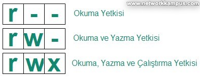
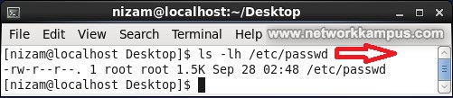
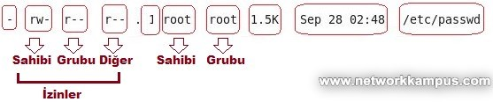
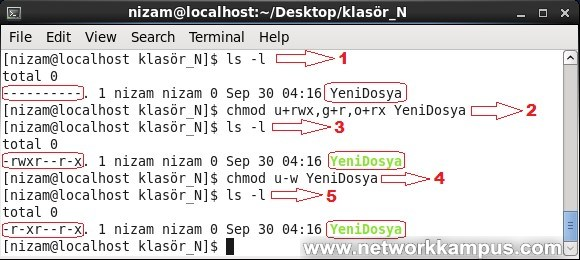

LİNUX DOSYA İZİNLERİ
chmod Komutu:
Linux Red Hat veya CentOS gibi işletim sistemlerinde dosyaların erişimleri okuma, yazma veya çalıştırma gibi izinlere tabidir.
- Okuma İzni (r, read)
- Yazma İzni (w, write)
- Çalıştırma İzni (x, execute)
“Dosya İzinleri Sembolleri”
Bu izinler dosya sahibinin izinleri, grubun izinleri veya diğer kullanıcıların izinleri şeklinde 3’e ayrılmaktadır.
- Sahibi
- Grup
- Diğer

Dosyaların sahip oldukları izinlere “ls –l” komutuyla görebiliriz. Bunu CentOS DOSYA VE DİZİNLERİN LİSTELENMESİ: ls KOMUTU VE PARAMETRELERİ makalemizde görmüştük.
Aşağıda örnek bir “ls –l” çıktısı verilmiştir. Çıktı “/etc” konumundaki “passwd” dosyasına ait detayları vermektedir.
linux centos/rhel red hat ls komutu parametreleri örnek
“ls -l Komut Çıktısı Örneği”

Çıktıya göre “passwd” dosyasının sahibi “root” kullanıcısının okuma ve yazma yetkisi (rw-) vardır, dosyanın dahil olduğu grup olan “root” grubuna dahil kullanıcıların sadece okuma yetkisi (r–) ve diğer tüm kullanıcıların da sadece okuma yetkisi (r–) vardır.
centos rhel chmod komutu dosya izinleri değiştirme
“Dosya İzinleri”
İzinlerin değiştirilmesi için “chmod” komutu kullanılmaktadır. İzinler iki türlü verilebilir.
- Sayısal Değerler İle İzinlerin Ayarlanması
- Harfler İle İzinlerin Ayarlanması
Sayısal Değer İle İzinlerin Ayarlanması:
chmod [sayi] [dosyaadi]
Yetkilerin sayısal karşılıkları; r=4, w=2, x=1

“ls –al” komutu ile “/Desktop/klasör_N” dizininde bulunan dosyaları listeledik. “YeniDosya” isimli dosyayı gördük.

Dosyaya ait izinleri değiştirmek istiyoruz.
Dosyanın sahibi hem okusun hem yazsın hem de çalıştırabilsin istiyorsak;
Sahibine (nizam kullanıcısı) verilecek izin; rwx=r+w+x=4+2+1=7
Dosyanın içerisinde bulunduğu grup üyeleri hem okusun hem yazsın istiyorsak;
Grup (nizam grubu) üyelerine verilecek izin; rw-=r+w+0=4+2+0=6
Diğer tüm kullanıcılar sadece okusun istiyor isek;
Diğer kullanıcılar için verilecek izin; r–=r+0+0=4+0+0=4
Sonuç = Kullanılacak izin komut “chmod 764 YeniDosya”
“ls –al” komutu ile “YeniDosya” isimli dosyanın izinlerinin isteğimiz doğrultusunda değiştiğini yani “rw-rw-r-“ olan iznin artık “rwxrw-r–” olarak değiştirildiğini görebiliriz.
Harfler ile İzinlerin Verilmesi veya Kaldırılması:
u (user) = Dosyanın sahibi
g (group) = Dosyanın Grubu
o (others) = Diğer Kullanıcılar
Dosyaya herhangi bir izni vermek için “+” , izni geri almak için “–“ kullanılmaktadır.
chmod [harfler] [dosyaadi]
Aşağıda örnek bir işlem yapılmıştır.
“Harfler İle Dosyalara İzin Verilmesi ve İzin Kaldırılması”

- “ls –al” komutu ile “/Desktop/klasör_N” dizininde bulunan dosyaları listeledik. “YeniDosya” isimli dosyayı ve detaylarını gördük. Dosyaya ait izinler “———“ şeklinde sıfırlanmış durumdadır.
- Dosyaya ait izinleri değiştirmek istiyoruz.
* Dosyanın sahibi hem okusun hem yazsın hem de çalıştırabilsin istiyorsak;
- Sahibine (nizam kullanıcısı) verilecek izin; rwx=u+rwx
* Dosyanın içerisinde bulunduğu grup üyeleri sadece okusun istiyorsak;
* Grup (nizam grubu) üyelerine verilecek izin; r–= g+r
* Diğer tüm kullanıcılar hem okusun hem de yazsın istiyorsak;
* Diğer kullanıcılar için verilecek izin; r-x=o+rx
* Sonuç = Kullanılacak izin komut “chmod u+rwx,g+r,o+rx YeniDosya”
- “ls –al” komutu ile izinlerin durumunun değiştiğini ve “———“ şeklinden “rwxr—r-x” şekline dönüştüğünü görebiliriz.
- Şimdi de bir izini iptal edelim. Dosya sahibinin yazma yetkisini kaldıralım.
* Sonuç = Kullanılacak izin komut “chmod u-w YeniDosya”
- “ls –al” komutu ile izinlerin durumunun değiştiğini ve “rwxr—r-x “ şeklinden “r-xr—r-x” şekline dönüştüğünü görebiliriz.
Geri dön...